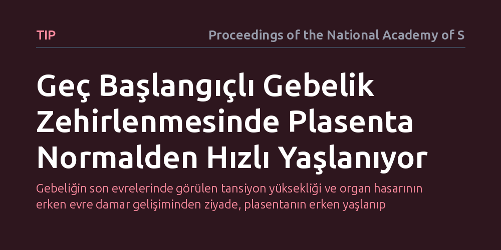

TIP · Proceedings of the National Academy of Sciences · 2026-10-21
Araştırmacılar, gebeliğin son dönemlerinde ortaya çıkan geç başlangıçlı preeklampsinin altında yatan plasenta işlev bozukluğunun kaynağını inceledi. Bulgular, bu klinik tablonun temelinde plasenta dokusunun beklenenden çok daha hızlı biyolojik yaşlanmasının yer aldığını gösteriyor.
Gebeliğin son evrelerinde görülen tansiyon yüksekliği ve organ hasarının erken evre damar gelişiminden ziyade, plasentanın erken yaşlanıp yorulmasından kaynaklanabileceğini gösteriyor.

Preeklampsi, halk arasında bilinen adıyla gebelik zehirlenmesi, gebeliğin ikinci yarısında tansiyonun aniden yükselmesi ve idrarda protein saptanmasıyla seyreden ciddi bir tablodur. Anne ve bebek sağlığı üzerinde hayati riskler barındıran bu klinik durum, erken başlangıçlı ve geç başlangıçlı olmak üzere iki ana grupta ele alınır. Erken başlangıçlı formun, gebeliğin ilk haftalarında plasentanın rahim damarlarına yeterince yerleşememesinden kaynaklandığı uzun zamandır bilinmektedir. Ancak tüm vakaların büyük bölümünü oluşturan geç başlangıçlı tablonun neden ortaya çıktığı tıp dünyasında uzun süredir netleştirilememiştir.
Geç başlangıçlı preeklampside plasenta gebeliğin başlarında normal şekilde gelişir ve fetüs uzun süre sağlıklı bir ortamda büyümeye devam eder. Buna rağmen gebeliğin son haftalarına doğru birdenbire annenin damar yatağını bozan ve organ yetmezliğine kadar varabilen bir hasar tablosu ortaya çıkar. Klinisyenler ve araştırmacılar, başlangıçta sorunsuz ilerleyen bu yapının neden doğuma yakın bir evrede aniden işlevini yitirdiğini anlayabilmek için doku düzeyindeki hücresel süreçlere odaklanmıştır.
Araştırmacılar, sorunun kaynağını belirleyebilmek amacıyla geç başlangıçlı preeklampsi tanısı konan gebelerden ve sağlıklı kontrollerden doğum sonrası elde edilen plasenta dokularını karşılaştırdı. İncelemelerde özellikle anne kanıyla doğrudan temas eden, hormon üretimini ve temel besin-gaz alışverişini yürüten dış hücre tabakasındaki değişimlere odaklanıldı. Doku örnekleri hem hücresel bütünlük hem de moleküler düzeydeki stres göstergeleri açısından ayrıntılı analizlere tabi tutuldu.
Laboratuvar incelemelerinde hücrelerin bölünme kapasiteleri, DNA hasar yanıtları ve hücresel yorgunluğu işaret eden biyokimyasal belirteçler tarandı. Böylece plasentadaki işlev kaybının sadece mekanik bir damar yetersizliğinden mi, yoksa dokunun içsel biyolojik programındaki bir sapmadan mı kaynaklandığı ortaya konulmaya çalışıldı.
Elde edilen sonuçlar, geç başlangıçlı preeklampsi olgularında plasenta dokusunun takvim yaşından çok daha ileri bir biyolojik yaşlanma sergilediğini gösterdi. Hücrelerin yenilenme kapasitelerinin zamanından önce tükendiği ve hücresel yaşlanma (senesens) işaretlerinin belirgin biçimde arttığı saptandı. Normal koşullarda gebeliğin sonuna kadar dayanacak şekilde programlanmış olan plasenta, bu hastalarda ömrünü vaktinden önce tamamlamış gibi davranıyordu.
Bu hızlanmış yaşlanma tablosu, doku düzeyinde hücresel stres sinyallerinin yoğunlaşmasıyla birlikte ilerliyor. Biyolojik ömrünü tüketen plasenta hücrelerinin anne dolaşımına saldığı iltihabi faktörler ve hücresel döküntüler, annenin genel damar ağında yaygın bir hasarı ve dolayısıyla tansiyon krizini tetikliyor.
Bu çalışma, geç başlangıçlı preeklampsinin erken başlangıçlı türden tümüyle farklı bir biyolojik mekanizmaya dayandığını açıkça ortaya koyuyor. Hastalığı tek bir başlık altında toplamak yerine, geç dönem vakalarını doğrudan bir 'plasental yorgunluk ve hızlanmış yaşlanma' sorunu olarak değerlendirmek, gelecekteki takip ve müdahale yaklaşımlarını şekillendirebilir.
Bununla birlikte, plasentadaki bu erken yaşlanmayı neyin başlattığı ve annenin mevcut metabolik ya da damarsal risk faktörlerinin sürece nasıl katkı sunduğu henüz aydınlatılmış değil. Çalışma doğrudan bir tedavi sunmasa da, gebelik takibinde plasenta yaşlanmasını erkenden yakalayabilecek biyobelirteçlerin geliştirilmesine sağlam bir biyolojik temel kazandırıyor.